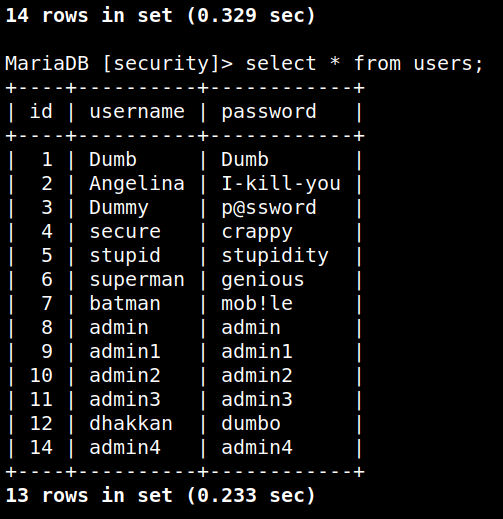
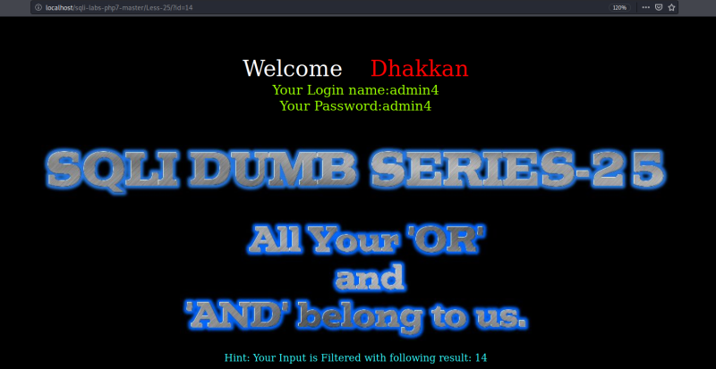

Bypassing blacklist filters 1
In some situations, an application that is vulnerable to SQL injection (SQLi) may implement various input filters that prevent you from exploiting the flaw without restrictions. For example, the application may remove or sanitize certain characters or may block common SQL keywords. In this situation, there are numerous tricks you can try to bypass filters of this kind.
We're going to work on lesson 25 and 25a.
NOTICE
Before starting this lesson purge the Database.
The users table should be lilke this.

You can change the “id” number as we've already done in previous lessons.

There's only a Hint to displaay the string after it has been filtered.